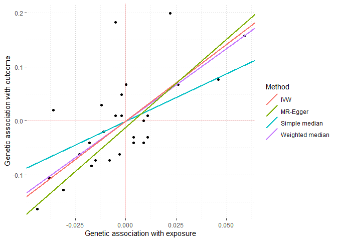

The MendelianRandomization R package provides a comprehensive set of methods for performing Mendelian randomization analyses with summarized data. We include methods for both single exposure and multiple exposure analyses, as well as methods to manage correlated instruments.
Summarized data on genetic associations with the exposure and with the outcome can be obtained from large consortia using websites such as Phenoscanner and GWAS catalog. These data can be used for obtaining causal estimates using Mendelian Randomization. For an overview of this approach see here for links to explanations and examples.
Installation
# Install released version from CRAN
install.packages("Mendelian Randomization")Usage
If you are just getting started with MendelianRandomization we recommend starting with the tutorial vignettes, starting with understanding the data input format.
Bugs and Feedback
If you encounter any issues, bugs, or have suggestions for improvements while using our R package, then let us know.
Please report bugs to the package maintainer Stephen Burgess
We are particularly keen to include further MR analysis code for other two sample MR methods in our package. Please let us know if you have working R code that is useful to include.
You can fork the package from Github to test adding additional function compatibility.
Example Analysis
This is an example analysis of lipid effects on coronary artery disease using the example data included with the package.
library(MendelianRandomization) #load package
MRInputObject <- mr_input(bx = ldlc,
bxse = ldlcse,
by = chdlodds,
byse = chdloddsse)The variables ldlc, hdlc, trig, and chdlodds are the genetic associations with (respectively) LDL-cholesterol, HDL-cholesterol, triglycerides, and coronary heart disease (CHD) risk for 28 genetic variants reported by Waterworth et al (2010). The respective standard errors of the associations are given as ldlcse, hdlcse, trigse, and chdloddsse.
Perform Mendelian randomization analysis
We can use this package to perform two-sample Mendelian Randomization analysis with a wide variety of methods. Here we show the inverse weighted variance method.
MRAllObject_ivw <- mr_ivw(MRInputObject) # Perform IVW Mendelian randomization analysis
MRAllObject_ivw #view results
#>
#> Inverse-variance weighted method
#> (variants uncorrelated, random-effect model)
#>
#> Number of Variants : 28
#>
#> ------------------------------------------------------------------
#> Method Estimate Std Error 95% CI p-value
#> IVW 2.834 0.530 1.796, 3.873 0.000
#> ------------------------------------------------------------------
#> Residual standard error = 1.920
#> Heterogeneity test statistic (Cochran's Q) = 99.5304 on 27 degrees of freedom, (p-value = 0.0000). I^2 = 72.9%.
#> F statistic = 28.0.
mr_plot(MRInputObject, line="ivw", interactive = FALSE) #plot resultsSensitivity Analysis
To assess the robustness of our results, we can perform sensitivity analyses, such as the Egger regression and the weighted median method:
MRAllObject <- mr_allmethods(MRInputObject, method="main") # Perform mr-Egger and median Mendelian randomization analysis
MRAllObject #view results
#> Method Estimate Std Error 95% CI P-value
#> Simple median 1.755 0.740 0.305 3.205 0.018
#> Weighted median 2.683 0.419 1.862 3.504 0.000
#> IVW 2.834 0.530 1.796 3.873 0.000
#> MR-Egger 3.253 0.770 1.743 4.762 0.000
#> (intercept) -0.011 0.015 -0.041 0.018 0.451
mr_plot(MRAllObject) #plot results
For more methods see the Vignettes on univariable and multivariable methods.